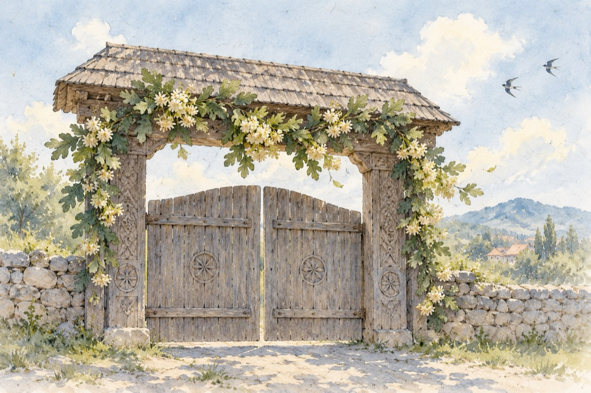

Rusaliile
La zece zile de la Înălțarea Domnului Iisus Hristos.
Ne punem flori de tei și ramuri de stejar
În porți, la brâu sau cingători
Ca amintiri, omagii sau ca dar
Acelor moș-strămoși ce-acuma-s muritori.
De moși, rusalii, când Sfântul Duh din cer a coborât
Și sufletele morților din morminte au ieșit
Cuvine-se prin ofrande și flori să mergem la mormânt
Și numele a toți ce-i ce-au plecat să fie pomenit.
Pentru a ne feri de toate relele
E bine cu toții să luăm aminte
Să ne ferim din calea lor, căci ielele
Sunt singurele ce au rămas de-a se întoarce în morminte.
Și modul de a ne apăra sunt rugăciunile și florile
Cum știu românii să petreacă sărbătorile.
Vasile Groza